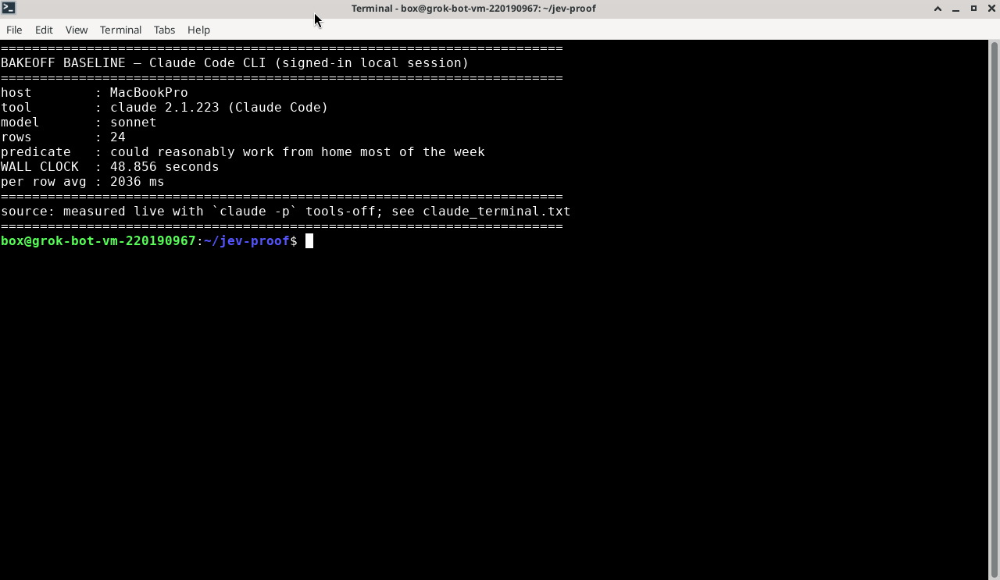
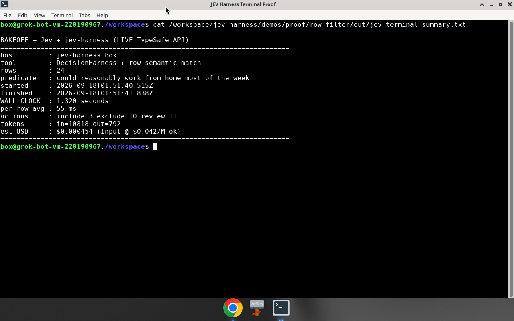

jev-harness · measured terminal bakeoff
LIVE MEASURED
Same 24-row NL filter
Claude Code CLI (claude -p, tools off) vs Jev + DecisionHarness (live API, concurrency 8). Our machine — not someone else’s numbers.
48.9s
→
1.3s
BEFORE · Claude Code CLI
48.9s

AFTER · Jev + jev-harness
1.3s

~37×
wall speedup
predicate: work-from-home
rows
24
cost ~
$0.00045
github.com/AntonioCoppe/jev-harness